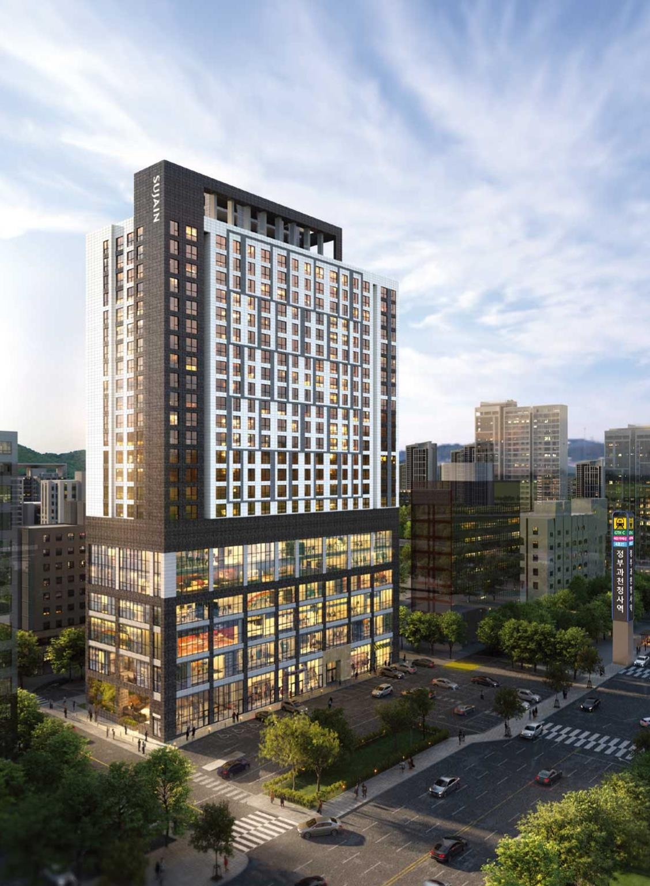
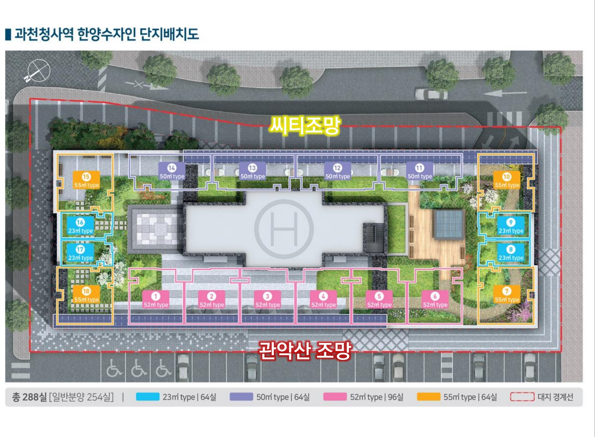
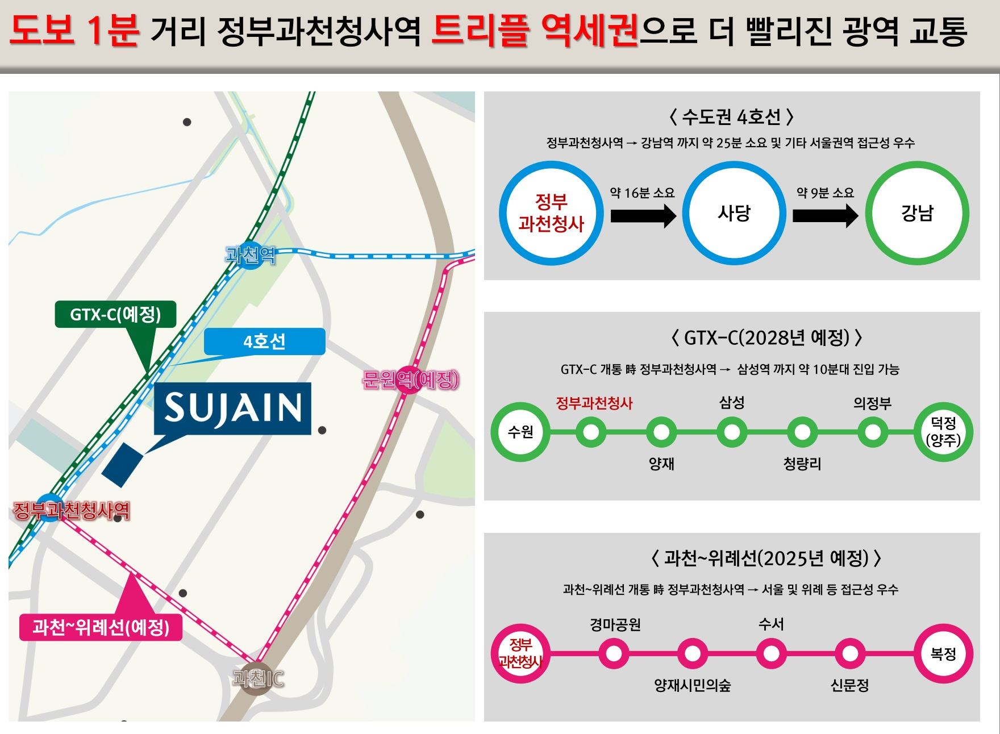
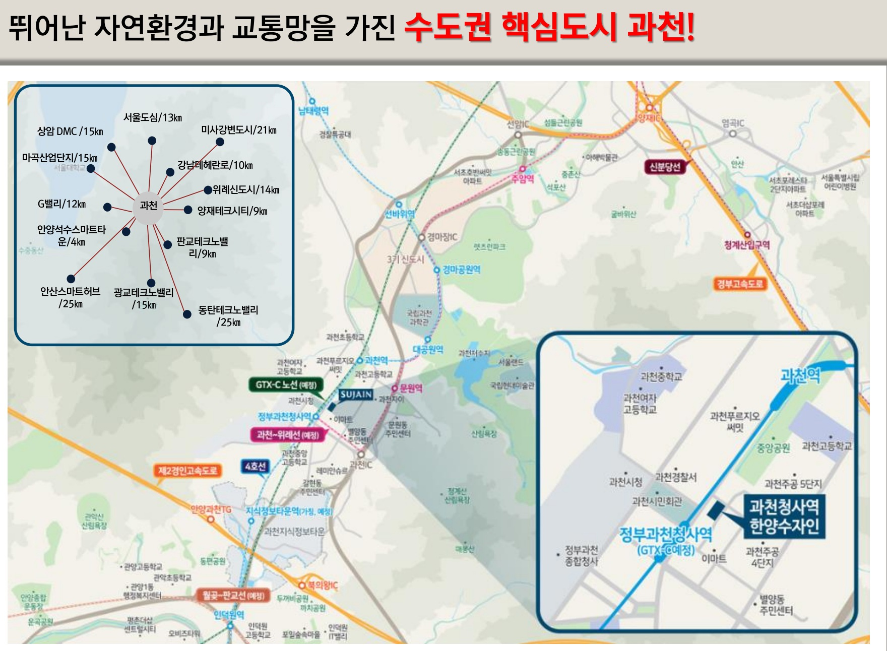

GWACHEON CENTRAL LIFE
SUJAIN
과천청사역 한양수자인과천의 중심에서새로운 일상을 만나다.분양가: 7억대부터
건축규모지상 22층
전체 공급288실
전용면적23·50·52·55㎡
시공한양
PROJECT OVERVIEW
사업개요

- 현장명
- 과천청사역 한양수자인
- 현장 주소
- 경기도 과천시 별양동 1-15
- 건축규모
- 지하 7층 ~ 지상 22층
- 공급규모
- 총 288실 · 일반분양 254실
- 대지면적
- 2,202㎡
- 연면적
- 40,213.04㎡
- 시공
- BS한양
- 분양가
- 분양가: 7억대부터
단지배치도

제공 교육자료 기준입니다. 현재 계약 가능한 호실과 실제 공급조건은 상담 시 확인해 주세요.
LOCATION
과천의 교통과 생활을 가까이


현장 주소경기도 과천시 별양동 1-15
지도는 제공 교육자료 작성 시점의 안내입니다. 예정 교통사업과 실제 운영 현황은 관계기관의 최신 안내를 확인해 주세요.
UNIT PLAN
평면안내
교육자료 중 대표 평면 3종
타입 번호를 누르면 해당 도면이 열립니다.
제공 교육자료의 타입별 도면입니다. 실제 구조·면적·옵션과 적용 호실은 현장과 계약자료를 기준으로 확인해 주세요.
CUSTOMER CONTACT
관심고객 접수
성함과 연락처를 남겨주시면 안내해 드립니다.